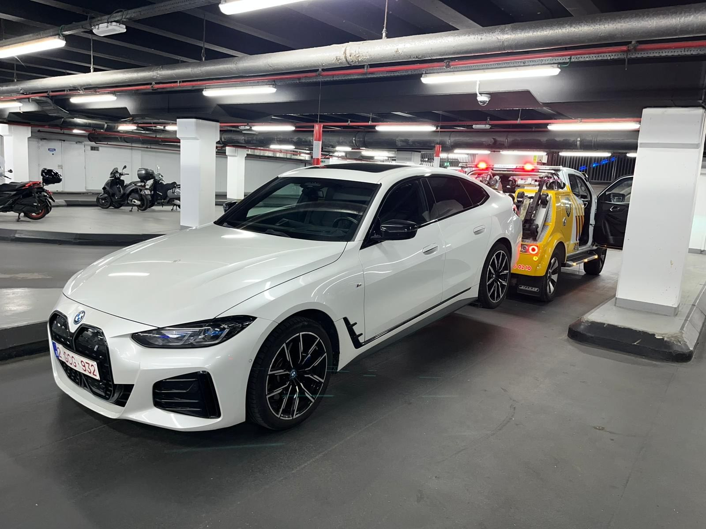
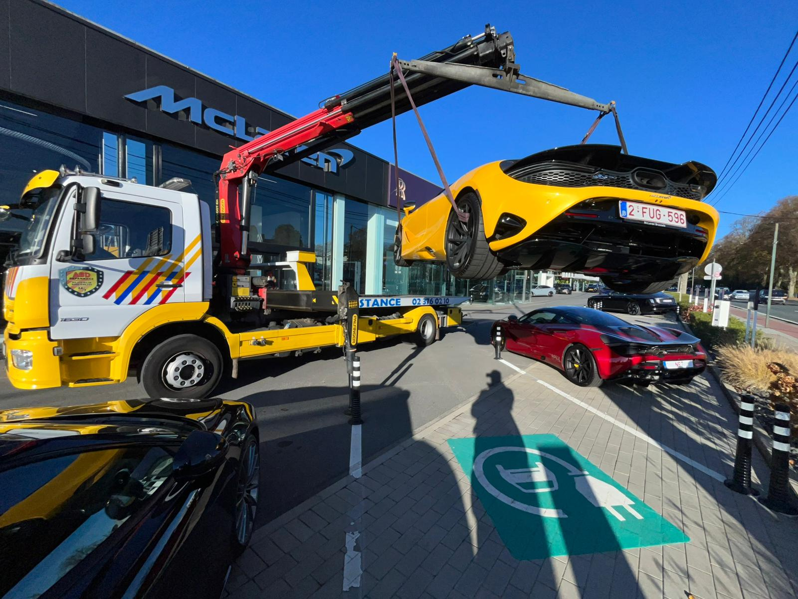
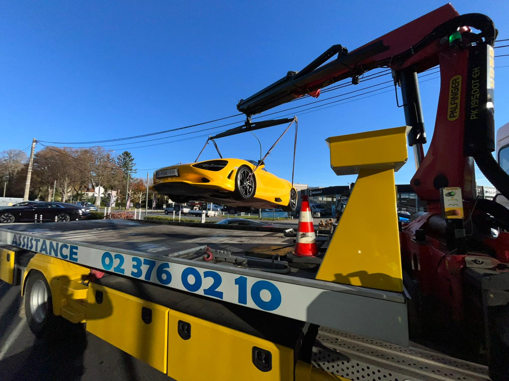

Bloque au sous-sol ? On arrive avec la jeep de traction et le materiel adapte. On vous sort de la.
★ 4,7/5 Google·Partenaire Touring Secours·Plateau pour véhicules électriques·24/7 jours fériés inclus

"Service impeccable. Dépannage de Bruxelles a Mons, en toute sérénité."
"Snelle en kwalitatieve service. Bedankt voor het vriendelijke gezicht."
"Super service. Rapide et efficace."
Besoin d'un dépannage voiture Anderlecht en dépannage parking souterrain Anderlecht ? Appelez le 0488 04 87 33. On descend avec notre jeep de traction la ou les gros camions passent pas. Plafonds bas, rampes etroites, niveau -2 ou -3 — on fait ca depuis 16 ans.
Votre voiture démarre plus. Vous etes au parking -2 d'un immeuble a Peterbos ou Veeweyde, il est 7h du matin, vous devez bosser. Pas de reseau, eclairage qui marche a moitie, personne autour. La plupart des dépanneurs refusent ce genre d'intervention — leur camion plateau passe pas sous les plafonds a 1m90. Vous etes coince en bas et personne veut descendre vous aider.

On a une jeep de traction qui rentre dans les parkings les plus etroits d'Anderlecht. On tracte votre voiture jusqu'a la sortie, puis on la charge sur le plateau si besoin. En cas de batterie a plat, on règle souvent le probleme sur place avec un booster ou un remplacement.

Si le probleme se règle pas au sous-sol (panne mecanique, direction cassee), on tracte avec la jeep jusqu'a la sortie. La, le camion plateau prend le relais et emmene votre véhicule chez le garagiste. Deux etapes, une seule intervention, un seul prix annonce avant.
C'est un peu plus cher qu'un dépannage sur la route — materiel specifique, plus de temps. Mais le prix est donne au téléphone avant d'intervenir. Nuit, weekend, jour ferie : meme tarif. Partenaire Touring Secours.
Le camion plateau, non. Mais notre jeep de traction passe partout. On tracte votre véhicule jusqu'a la sortie, et la le camion prend le relais si besoin.
Un peu plus qu'un dépannage en surface, oui. Materiel specifique, plus de temps. Mais vous connaissez le prix avant qu'on descende — on l'annonce au téléphone.
Notre jeep de traction passe les plafonds à partir d'environ 1,90 m. La plupart des parkings souterrains résidentiels et de bureaux sont accessibles. Précisez la hauteur au téléphone si vous l'avez.
Quasi tous : parkings d'immeubles, centres commerciaux, bureaux, hôpitaux. On gère les rampes étroites, les virages serrés, les plafonds bas. Les parkings très anciens avec accès quasi impossible, on évalue avant de venir.
Oui. On utilise le treuil de la jeep pour la sortir progressivement. Sécurité du véhicule, sécurité des autres usagers de la rampe.
0488 04 87 33 — On descend, on dépanne, vous repartez.
Un humain décroche, jour et nuit, à Anderlecht et toute Bruxelles. Le prix annoncé au téléphone est celui qu'on facture à l'arrivée. Pour explorer tous les services, voir ABD Dépannage Anderlecht.
0488 04 87 3324h/24 — 7j/7 — jours fériés inclus